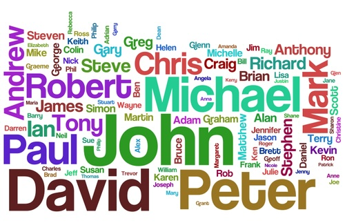

Знакомство по-турецки. Самые важные слова и фразы для поддержания диалога.
На уроке вы узнаете, как покорить собеседника уже с первых слов
приветствия, без стеснения продолжить беседу и оставить приятное
впечатление о себе при прощании.
родственники
ad

Давайте пройдем итоговый тест, чтобы упорядочить знания и поскорей перейти
к следующему уроку. Обратите внимание, что результат прохождения итогового
теста будет влиять на прогресс урока. Чтобы разблокировать 3 урок, вам
нужно ответить правильно с минимальным количеством ошибок. Удачи!
Итоговый тест к уроку 2
1. Выберите неправильный вариант ответа. Как можно
поблагодарить по-турецки?
2. Выберите неправильный вариант ответа. Как можно
поприветствовать собеседника по-турецки?
3. Выберите неправильный вариант ответа. Как можно
попрощаться с собеседником по-турецки?
4. Выберите подходящий вариант ответа на вопрос: 'Nasılsınız?'
5. Выберите подходящий вариант ответа на вопрос: ‘Nerelisiniz?'
6. Как нельзя ответить на вопрос: ‘Sizin adınız ne?’
7. Какой из вопросов мы можем задать, если обращаемся на
ВЫ?
8. Какой из вопросов мы можем задать, если обращаемся на
ТЫ?